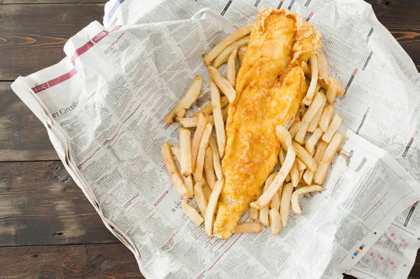
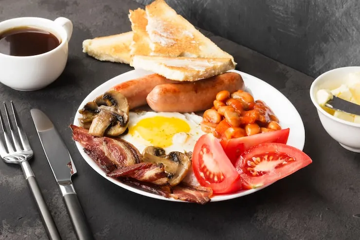
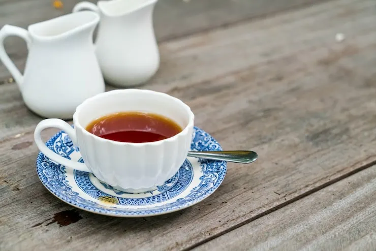
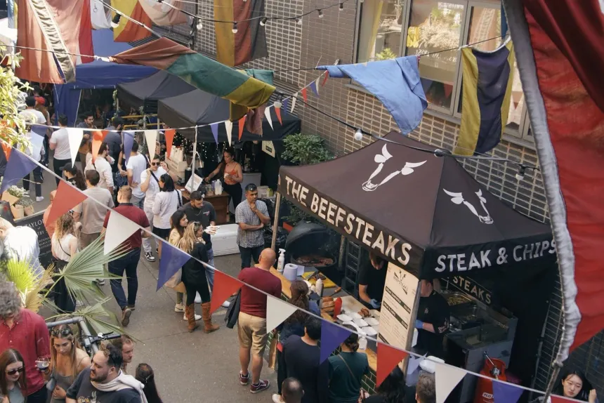

Typische Gerichte, Getränke und kulinarische Highlights der Stadt.
Das bekannteste britische Gericht - knuspriger Fisch mit Pommes.

Ein herzhaftes Frühstück mit Eiern, Würstchen, Bohnen und Toast.

Der klassische britische Tee - ein wichtiger Teil der Kultur.

London bietet vielfältiges Street Food aus aller Welt.
